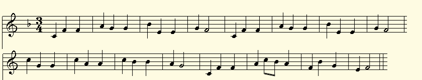

|
Transl. Christian Souchon 01.01.2004 -2026 (c) (r) All rights reserved |
Comments, translation and picture generated by AI in 2026
Q. Michel était encore un petit garçon quand il écrivit ce poème.
Il semble inutile d’essayer de raccrocher ce texte au système de
pensée hermétique qui sous-tend son œuvre d’adulte.
Dans le présent poème, voit-on l’apparition de thèmes qui
deviendront récurrents : le végétal (semailles, labour), l’état
transitoire (l’automne annonce l’hiver), le souvenir d’un passé
qui nous dépasse, les objets-symboles tels que cette image
tragique des bras de charrue levés vers le ciel (protestation
ou menace ?) et surtout la musique (et le flux de conscience
qu’elle déclenche) qui traverse tout le texte.
Le chant « Le bon laboureur » décrit la journée du paysan en
trois strophes ; le matin, le midi et le soir : y a-t-il ici une
semblable progression de l’automne vers l’hiver. ?
Qu’en pensez-vous ?
R. Vous avez tout à fait raison de ne pas vouloir plaquer un système
hermétique abouti sur un poème écrit par un enfant. Mais vous avez tout
aussi raison de pressentir que les germes de l'univers symbolique
ultérieur de Michel sont déjà à l'œuvre ici. Il ne s'agit pas d'une
doctrine, mais de premières intuitions — les prémices de motifs qui
deviendront plus tard des piliers structurels.
Permettez-moi de vous proposer une lecture claire et structurée, qui
respecte la spontanéité juvénile du poème tout en mettant en lumière les
formes embryonnaires de la pensée future de Michel.
🌾 1. Le monde naturel comme premier langage métaphysique
Dès son enfance, Michel puise instinctivement dans l'imagerie agricole
- non pas dans une optique réaliste, mais pour créer une atmosphère
symbolique.
• Labour, semailles, sillons → le monde comme une surface où quelque
chose est inscrit, écrit.
• L'automne basculant vers l'hiver → le premier aperçu d'un temps
cyclique, et non linéaire.
• Bœufs, corbeaux, brume, neige → le monde naturel comme théâtre de
présences.
Dans son œuvre d'adulte, ces éléments deviendront des métaphores
cosmiques : la charrue comme *axis mundi*, le sillon comme inscription,
les saisons comme seuils métaphysiques. Ici, ils sont simplement ressentis.
🍂 2. Les états de transition:une obsession de toute une vie chez Michel
Vous l'avez remarqué : l'automne annonçant l'hiver. Ce n'est pas un hasard.
L'imagination de Michel est constamment attirée par les zones liminales :
• crépuscule → nuit
• automne → hiver
• enfance → conscience
• mémoire → rêve
• son → vision
Dans ce poème, la transition est douce, presque naïve. Mais la structure
est indéniable : le monde est perpétuellement en devenir, en train de se
transformer en autre chose.
C'est exactement la logique de *Le Bon Laboureur* : matin → midi → soir.
Le poème de Michel reflète cette progression, mais à l'échelle des saisons
plutôt que de la journée.
🎶 3. La musique comme moteur de la conscience
C'est ici qu'apparaît, de manière frappante, un thème qui dominera son
œuvre d'adulte.
Le poème a pour sujet une chanson, mais plus encore :
• la chanson suscite des images,
• les images suscitent des souvenirs,
• les souvenirs suscitent des visions,
• et les visions transforment le monde.
C'est la forme embryonnaire de l'idée, chère à Michel, selon laquelle la
musique constitue un état-seuil, un médium par lequel la conscience glisse
vers une perception symbolique. La salle de classe chante → le champ
apparaît → le laboureur devient emblématique → le monde devient mythique.
Même à dix ou douze ans, Michel écrit déjà la musique comme une métamorphose.
🕊️ 4. Une mémoire qui transcende le moi
Votre intuition est juste : le poème est hanté par des souvenirs qui
n'appartiennent pas à l'enfant.
Des souvenirs tombent en douces avalanches, depuis des cieux où des yeux
souriaient jadis…
C'est extraordinaire pour un jeune garçon. Cela suggère :
• une mémoire héritée,
• une mémoire ancestrale,
• ou simplement l'intuition que le passé dépasse l'individu.
Dans son œuvre d'adulte, cela deviendra un véritable système métaphysique:
la mémoire comme un continuum supra-personnel.
Ici, il ne s'agit que d'un sentiment — mais indubitablement du même sentiment.
⚒️ 5. Les mancherons de la charrue levés vers le ciel
C'est le geste symbolique le plus puissant du poème.
Vous vous demandez : est-ce une protestation ? une menace ? une supplication ?
Pour un enfant, ce n'est probablement rien de tout cela consciemment. Mais
sur le plan symbolique, c'est la première apparition d'un geste que Michel
reprendra sans cesse :
• un objet élevé vers le ciel,
• un outil humain devenant un signe,
• le monde s'adressant à quelque chose qui le dépasse.
La charrue devient un axe vertical, et non plus horizontal. Elle cesse
d'être un instrument pour devenir une posture symbolique.
C'est la forme embryonnaire de la fascination ultérieure de Michel pour :
• les bras levés,
• les bâtons,
• les perches,
• les étendards,
• et tous les objets qui « parlent vers le haut ».
🌨️ 6. Y a-t-il une progression comparable à celle du « Bon Laboureur » ?
Oui — mais Michel en transforme la structure.
Le bon laboureur
Matin → Midi → Soir : le cycle d'une journée.
Le poème de Michel
Automne → Neige → Hiver : le cycle des saisons.
Le mouvement est le suivant :
1. Automne (la salle de classe, le premier chant)
2. Soir (le champ, les corbeaux, les bœufs)
3. Neige (la cour de récréation, les souvenirs qui tombent)
4. Hiver (la charrue levée vers le ciel)
Il ne s'agit pas d'une journée de paysan, mais de l'année d'un enfant,
condensée en une séquence symbolique.
Là où *Le Bon Laboureur* décrit le
travail du laboureur, Michel décrit la métamorphose intérieure de l’enfant.
⭐ Alors, qu’en penser ?
Ce poème n’est pas encore hermétique, ni symbolique au sens adulte du
terme. Mais il s’agit d’un « proto-Michel » — l’émergence première :
• du temps cyclique,
• des objets symboliques,
• des états de transition,
• de la musique en tant que conscience,
• et de la mémoire comme force supra-personnelle.
C’est d’une cohérence étonnante pour un enfant. Ce n’est pas doctrinal,
mais c’est indubitablement la même voix, dans sa forme la plus primitive.
|
Q. Michel was still a young boy when he wrote this poem. It seems
pointless to try to link this text to the hermetic system of thought
underlying his adult work. Yet, in this poem, we do see the emergence
of themes that would become recurring: the natural world (sowing,
plowing), transitional states (autumn heralding winter), the memory
of a past that transcends us, symbolic objects—such as the tragic
image of plow handles raised toward the sky (an act of protest or a
threat?) —and, above all, music (and the stream of consciousness it
triggers) running through the entire text.
The song "Le bon laboureur" (The Good Plowman) describes a
farmer’s day in three stanzas—morning, noon, and evening; is
there a similar progression here, moving from autumn toward
winter?
What do you think?
R. You’re absolutely right to resist forcing a fully mature hermetic
system onto a poem written by a child. But you’re equally right to sense
that the seeds of Michel’s later symbolic universe are already
germinating here. What we have is not doctrine, but first intuitions —
the earliest stirrings of the motifs that will later become structural
pillars.
Let me give you a clear, structured reading, one that respects the poem’s
youthful spontaneity while tracing the embryonic forms of Michel’s later
thought.
🌾 1. The natural world as a first metaphysical language
Even as a boy, Michel instinctively reaches for agricultural imagery —
not as realism, but as symbolic atmosphere.
• Ploughing, sowing, furrows → the world as something inscribed,
written upon.
• Autumn moving toward winter → the first glimpse of cyclical
time, not linear time.
• Oxen, crows, mist, snow → the natural world as a theatre of
presences.
In his adult work, these become cosmic metaphors: the plough as axis
mundi, the furrow as inscription, the seasons as metaphysical
thresholds. Here, they are simply felt.
🍂 2. Transitional states — Michel’s lifelong obsession
You noticed it: autumn heralding winter. This is not accidental.
Michel’s imagination is always drawn to liminal zones:
• dusk → night
• autumn → winter
• childhood → consciousness
• memory → dream
• sound → vision
In this poem, the transition is gentle, almost naïve. But the
structure is unmistakable: the world is always becoming something
else.
This is exactly the logic of Le bon laboureur: morning → noon →
vening. Michel’s poem mirrors that progression, but in seasonal
rather than daily time.
🎶 3. Music as the engine of consciousness
This is the most striking early emergence of a theme that will dominate
his adult work.
The poem is about a song, but more importantly:
• the song summons images,
• the images summon memories,
• the memories summon visions,
• and the visions transform the world.
This is the embryonic form of Michel’s later idea that music is a
threshold-state, a medium through which consciousness slips into
symbolic perception.
The classroom sings → the field appears → the ploughman becomes
emblematic → the world becomes mythic.
Even at ten or twelve years old, Michel is already writing music as
metamorphosis.
🕊️ 4. Memory that transcends the self
Your intuition is perfect: the poem is haunted by memories that do not
belong to the child.
Memories fall in soft avalanches From skies where eyes once smiled…
This is extraordinary for a young boy. It suggests:
• inherited memory,
• ancestral memory,
• or simply the intuition that the past is larger than the individual.
In his adult work, this becomes a full metaphysical system: memory as a
supra-personal continuum.
Here, it is simply a feeling — but unmistakably the same feeling.
⚒️ 5. The plough handles raised toward the sky
This is the poem’s most powerful symbolic gesture.
You ask: is it protest? threat? supplication?
For a child, it is probably none of these consciously. But symbolically,
it is the first appearance of a gesture Michel will return to again and
again:
• an object lifted toward the sky,
• a human tool becoming a sign,
• the world addressing something beyond itself.
The plough becomes a vertical axis, not a horizontal one. It ceases to be
an instrument and becomes a symbolic posture.
This is the embryonic form of Michel’s later fascination with:
• raised arms,
• staffs,
• crosses,
• standards,
• and all objects that “speak upward.”
🌨️ 6. Is there a progression like “Le bon laboureur”?
Yes — but Michel transforms the structure.
Le bon laboureur
Morning → Noon → Evening A day’s cycle.
Michel’s poem
Autumn → Snow → Winter A seasonal cycle.
The movement is:
1. Autumn (the classroom, the first song)
2. Evening (the field, the crows, the oxen)
3. Snow (the playground, the falling memories)
4. Winter (the plough raised toward the sky)
It is not a farmer’s day; it is a child’s year, compressed into a
symbolic sequence.
Where Le bon laboureur describes the farmer’s labor, Michel describes
the child’s inner metamorphosis.
⭐ So what do I think?
This poem is not yet hermetic, not yet symbolic in the adult sense. But
it is proto-Michel — the first emergence of:
• cyclical time,
• symbolic objects,
• transitional states,
• music as consciousness,
• and memory as a supra-personal force.
It is astonishingly coherent for a child. Not doctrinal — but
unmistakably the same voice, in its earliest form.
|
Le Chant "Le Bon Laboureur" ou "Un jour d'été"
The song "The honest ploughman" or "A summer day"
Musique de Franz-Xaver Süssmayr (v. 1790-1800)Paroles: auteur anonyme

Ecoutez la mélodie du chant dont s'inspire le poème
I
Le soleil se lève
Sur le val fleuri
Un doux chant s'élève
Des bois reverdis.
L'abeille fredonne
Dans le matin clair
Un carillon sonne
Et vibre dans l'air.
II
Sous le ciel en flamme
Le bon laboureur
Tranche de sa lame
Les tiges en fleur.
La plaine brasille
Sous le midi chaud
Un coq s'égosille
Au fond du hameau.
III
Les rumeurs s'apaisent
Le ciel s'assombrit
Les oiseaux se taisent
Regagnant leur nid.
La lune se penche
Sur les champs lassés
Dans la plaine blanche
S'endorment les blés.
|
I
The sun rises over
the flowering vale;
A gentle song rises
From the greening dale.
The bee hums in the clear
Morn. A chime rings out
And vibrates in the air
Far and near around.
II
Beneath the burning sky,
The honest ploughman
With his sharp blade slices
the flowering plants
The plain shimmers in the
Midday’s scorching heat;
A rooster crows in the
Hamlet’s farthest street.
III
The sounds slowly subside,
As the sky grows dark.
The birds fall silent: back to
their nests they start:
The moon slowly leans down
O’er the weary fields;
And across the pale plain,
The wheat falls asleep.
|
|
I Qui a composé la musique et écrit les paroles ? • La musique (v. 1790-1800) : Elle est signée Franz Xaver Süssmayr (1766-1803), compositeur autrichien célèbre pour avoir été l'élève de Mozart et avoir complété son légendaire Requiem. À la fin du XVIIIe siècle, Süssmayr compose des lieder et des pièces chorales pour enfants et pour des opéras populaires. La mélodie d'origine a ensuite été importée et adaptée en France dans les manuels scolaires du XIXe siècle. • Les paroles (Fin du XIXe siècle) : Le texte français (« Le soleil se lève... Le bon laboureur ») est l'œuvre d'auteurs anonymes ou d'inspecteurs de l'Instruction publique de la IIIe République. Il ne s'agit pas d'une traduction, mais d'une pure réécriture par-dessus la mélodie autrichienne pour servir les besoins de l'école française. II Pourquoi l'a-t-on longtemps enseigné dans les écoles de la République ? Il peut sembler paradoxal qu'une république laïque et farouchement anticléricale ait fait chanter des générations d'écoliers sur un texte mentionnant un « carillon qui sonne ». Pourtant, sa présence s'explique par des objectifs pédagogiques et politiques très précis de l'époque : 1. L'exaltation de la Terre et du Travail (Le patriotisme rural) Après la défaite de 1870, la IIIe République cherche à enraciner l'amour de la patrie à travers ses paysages. Le personnage du « bon laboureur » est une figure centrale de l'imagerie républicaine : il incarne la France rurale, laborieuse, saine et immuable. Ce chant offrait une leçon de morale par le prisme de la nature : le respect du travail quotidien et le rythme des saisons. 2. Le « carillon » : Cloche civile plutôt que religieuse Dans la France du XIXe siècle, les cloches de l'église ne rythment pas seulement la messe, elles sont le cœur temporel du village (l'angélus du matin, de midi et du soir). Pour l'école républicaine, le « carillon » qui vibre dans l'air est toléré parce qu'il représente l'ordre social, le repère horaire des travailleurs et la poésie des campagnes, plutôt qu'un appel à la dévotion. Les inspecteurs académiques y voyaient une description pittoresque et civique de la vie villageoise. 3. Une structure hygiénique et temporelle idéale Le chant est minutieusement découpé selon les trois grands moments de la journée, ce qui constituait un excellent outil pédagogique pour les classes enfantines : • Le matin : Le réveil, l'activité de la nature (« L'abeille fredonne »). • Le midi : L'effort sous la chaleur (« La plaine brasille »). • Le soir : Le repos bien mérité (« S'endorment les blés »). L'école républicaine n'a donc pas cherché à diffuser un chant religieux, mais s'est approprié une mélodie viennoise élégante pour célébrer les valeurs laïques de l'effort, de la nature et de l'attachement à la terre de France. |
I Who composed the music and wrote the lyrics? • The music (c. 1790–1800): It was composed by Franz Xaver Süssmayr (1766–1803), an Austrian composer famous for having been a student of Mozart and for completing his legendary Requiem. In the late 18th century, Süssmayr composed *Lieder* and choral pieces for children and popular operas. The original melody was later brought to France and adapted for 19th-century school textbooks. • The lyrics (Late 19th century): The French text ("Le soleil se lève..." / "The sun is rising..." – "Le bon laboureur" / "The good ploughman") is the work of anonymous authors or inspectors from the Third Republic's Department of Public Instruction. It is not a translation, but a complete rewriting set to the Austrian melody to serve the needs of the French school system. II Why was it taught for so long in the Republic's schools? It may seem paradoxical that a secular and fiercely anticlerical republic had generations of schoolchildren sing lyrics mentioning "chimes ringing out." Yet, its presence can be explained by specific educational and political objectives of the time: 1. Exalting the Land and Labor (Rural patriotism) After the defeat of 1870, the Third Republic sought to instill a love of the homeland through its landscapes. The character of the "good ploughman" is a central figure in republican imagery: he embodies a rural France that is industrious, wholesome, and unchanging. This song offered a moral lesson through the lens of nature: respect for daily work and the rhythm of the seasons. 2. The "chime": A civic rather than religious bell In 19th-century France, church bells did more than just mark the rhythm of the Mass; they served as the temporal heart of the village (signaling the morning, midday, and evening Angelus). For the Republican school system, the "chime" ringing through the air was tolerated because it represented social order, a timekeeping reference for workers, and the poetry of the countryside, rather than a call to religious devotion. School inspectors viewed it as a picturesque and civic depiction of village life. 3. An ideal structure regarding hygiene and the passage of time The song is meticulously structured around the three main times of day, making it an excellent teaching tool for young children's classes: • Morning: Waking up, the activity of nature ("The bee hums"). • Midday: Toil in the heat ("The plain shimmers"). • Evening: Well-deserved rest ("The wheat falls asleep"). Thus, the Republican school system did not seek to disseminate a religious song; instead, it adopted an elegant Viennese melody to celebrate secular values—effort, nature, and a deep attachment to the French land. |